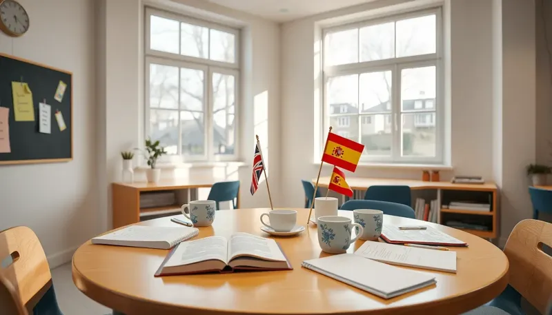
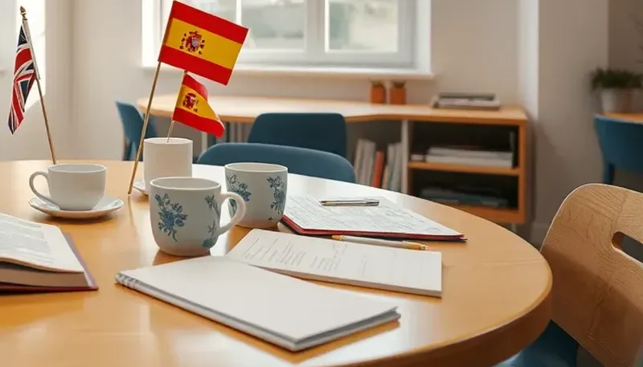

Занятия после школы · 16:00 и 18:00
Английский после уроков — с носителями языка
«Саманта» учит детей и подростков от 5 до 17 лет с 1991 года. Группы до 8 человек, преподаватели из Великобритании и США.
35лет учим английскому
8учеников в группе, не больше
6уровней — от нулевого до продвинутого
5–17лет — возраст учеников


Школа, где говорят по-английски
«Саманта» — частная школа дополнительного образования. Семь учебных кабинетов с экранами для видео, музыкальный кабинет, библиотека зарубежных учебников и пособий. Каждый урок — с носителем языка.
Дети 5–7 летМладшие школьникиПодростки 11–17 летПодготовка к ЕГЭМеждународные экзаменыEuroexamsРазговорная практикаСтуденты и взрослые
Носители языка
Преподают дипломированные учителя из Великобритании и США. Русский на уроках — по минимуму.
Группы до 8 человек
Группы по возрасту и уровню: шесть уровней, от нулевого до продвинутого.
35 лет опыта
Школа открылась 1 октября 1991 года при Центре детской дипломатии имени Саманты Смит.
Приходите знакомиться — подберём группу
Москва, ул. Гарибальди, 28, корп. 3 · м. «Новые Черёмушки»